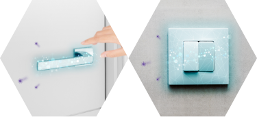

A大腸菌などの菌、カビの繁殖防止に効果があります。


職場の衛生環境を守る。その答えは、
「 抗ウイルス塗装 」
にある。
抗ウイルス機能が
“自己再生”する新技術！
発現・持続メカニズム
一価銅イオン（Cu＋）は大気中の酸素、水分と反応すると、活性酸素（OHラジカル）を発生。高い抗ウイルス・抗菌効果のある一価銅イオンと活性酸素の２つの力が、ウイルスの脂質とタンパク質を酸化分解し、ウイルスを除去します。この時、一価銅イオンは二価銅イオン（Cu2＋）に変化しますが、当社の独自技術である還元作用により、二価銅を活性な一価銅へ還元。抗ウイルス機能が復活します。
● 特許第6756881号「抗ウィルス性組成物の製造方法」
● 特許第6734975号「抗ウィルス性基体の製造方法」
ABOUT
ウィルヘル コート プロについて
抗ウイルス機能を、“ 塗装”で定着。
さらに、“ 自己再生技術”で効果が持続する。
当社は、2016年に業界の中でも先駆けて抗ウイルス機能を持つメラミン化粧板を発売しました。その技術を生かし、新たにコーティング剤を開発。金属系触媒と紫外線（ＵＶ）硬化樹脂の独自配合による塗装で抗ウイルス機能の定着を実現しました。
また、当社の独自技術により、抗ウイルス機能を持つ一価銅の自己再生に成功。通常、一度効果を発揮すると抗ウイルス機能は低下しますが、ウィルヘル コートプロは、一価銅が何度も再生するため、効果が長期間持続します。
ウイルスの拡散、菌の繁殖を防ぐ。それが、ウィルヘル コート プロです。
施工フロー
抗ウイルス剤を塗装した後に、紫外線を照射し、人の手が接触するポイントに抗ウイルス剤を定着させることがウィルヘル コート プロの最大の特長。
そうすることで、1度の施工で高持久性と高耐久性を実現します。
❶養生
❷清掃・下地処理

❸コーティング塗布
❹紫外線照射
❺施工完了
施工済みの場所にはステッカーでお知らせ
ウィルヘル コート プロは、素材の表面に抗ウイルス剤を塗装します。
その際、「マットな素材に艶が出る（図参照）」「 ⽩⾊に塗装すると、若⼲⻘みがかった⾊になる」など、質感が変化する場合がありますのでご注意ください。
※写真は一例です。
施工前
施工後
FEATURES
特長
2
3
4

※バクテリオファージQβを用いた社内試験結果（JIS R1756に準拠）
※上記データは測定値であり保証値ではありません。
［注意事項］本製品は表面に付着した特定のウイルスの数を減少させますが、感染予防を保証するものではありません。また、抗ウイルス加工は病気の治療や予防を目的とするものではありません。
CASE
ウイルス対策の実施ポイント
間接的に接触する場所が、オフィスにはこんなにもあります。
トイレや会議スペース、カフェテリアなど、不特定多数の人が一日に何度も出入りする場所がオフィス。
その中で、知らず知らずのうちに何度も人の手が触れ合うポイントが、オフィスにはたくさんあります。

接触ポイントへの抗ウイルス塗装が、
ウイルス拡散リスクを低減する！
接触ポイントへのウイルス対策として効果的なのがウィルヘル コート プロ。
ウイルスが付着しても繁殖させない抗ウイルスコーティングで、間接的な接触によるウイルス拡散リスクを低減します。
照明スイッチ
一般的なスイッチから、事務所などでよく設置されているタイプなど、幅広い形状にも対応可能です。
トイレ
トイレのフタや便座、ペーパーホルダーや洗浄ボタンなど、頻繁に接触する箇所をコーティング。
トイレスイッチ
トイレや階段などに設置される手すりは、あらゆる場所に手が触れる可能性があるため、丸ごとコーティングします。
ドアハンドル
形状や材質に関わらず、幅広いタイプのドアハンドルに施工することができるため、大規模なリフォームなどは不要です。
エレベーターのボタン
機能性やボタンの視認性を損なうことなく抗ウイルス加工を施すことが可能です。
FAQ
よくある質問
Q菌やカビにも効果がありますか？
Q施工費用は㎡あたりいくらですか？
A㎡単価ではなく施工箇所毎の単価で算出しています。
Q施工箇所毎の場合、施設当たり概算でいくらですか？
A約180㎡のクリニックでトイレ、ドアノブ、照明スイッチなどで概算60万程度です。
施工箇所数によって異なってくるため現場確認をさせて頂き費用を算出します。
Q１施設当たりの施工時間はどれくらいですか？
A施工箇所数と作業人員数によって変わりますが、50万規模で1日、100万規模で1~2日程度です。
Q施工後の使用不可時間はありますか？
A施工直後から使用可能です。
Q対象素材に変形や変質はありませんか？
A変形はありませんが、素材によっては一部光沢など外観変化が生じます。
Qどの素材に施工可能ですか？
A金属、プラスチック、木材等は可能ですが、布、合皮、軟質樹脂などの軟質材は不可です。
Q壁面にも施工できますか
A施工に多くの時間を要するため推奨しておりません。不特定多数の方が頻繁に接触する部分の施工を推奨しております。
QOHラジカルとは何ですか？
A活性酸素という物質の１種です。
QCovid19にも有効ですか？
A有効です。試験結果についてはプレスリリースをご確認下さい
※プレスリリースURL
Qモニタリングは、いつでも、誰でも簡単に出来ますか？その費用は？
A現状のモニタリングは作業にスキルが必要で、有償となります。現在、簡易的な方法を開発中です。
Q施工後に施工済みを示すものはありますか？
A抗ウィルス施工済みシールで表示可能です。POPもご用意しております。
Q空間のウイルスにも有効ですか？
A接触することが必要なため、空間のウィルスには無効です。
Q施工実績は？
A2021年4月時点で官公庁、博物館、学校、クリニック、オフィス、ホテル、工場、マンションなど28物件の実績が御座います。
Q通常の定期清掃で効果に影響はありませんか？ 使用不可の薬剤は？
Aエタノール、次亜塩素酸等での一般的な洗浄が可能です。
Q施工前と後での意匠的（見た目）変化はありますか？
A色見：白い素材ではわずかに青色化が見られます。また、半艶の塗料のため艶の変化があります。
Qコート後の保証期間はどれくらいですか？
A１年保証となります
Q3年後に効果は無くなりますか？
A3年経過後直ぐに効果が無くなることは御座いませんが、設計値、3年毎の施工を推奨しています。有償モニタリングにて効果の継続を確認することも可能です。
INTRODUCTION
導入実績
オフィスや工場をはじめ、商業施設や病院など公共施設でも採用されています。
●ききょうの丘健診プラザ（土岐市）
●ぎふ綜合健診センター（岐阜市）
●某博物館（愛知県）
●某小学校トイレ（名古屋市）
●三井ガーデンホテル六本木プレミア（東京都）
●某医院（愛知県）
●某医院（岐阜県）
●某整形外科（愛知県）
●某クリニック（名古屋市）
●某薬局（名古屋市）
●某オフィス（愛知県）
●某オフィス（東京都）
●某オフィス（東京都）
●某オフィス（東京都）
●ガソリンスタンド アルファン中曽根SS（岐阜県）
●㈱イクタ 本社オフィス（愛知県）
●㈱イクタ 本社工場（愛知県）
●某スーパーマーケット（兵庫県）
●Dragee Sweets & Cafe（滋賀県）
●自動車販売店 アルファンオート（岐阜県）
●某飲食店（東京都）
●某長距離バス内パウダールーム（愛知県）
●某マンション共用部（東京都）
●某マンション共用部（東京都）
●立川防災館（東京都）
ききょうの丘健診プラザ（土岐市）
ぎふ綜合健診センター（岐阜市）
PRODUCTS
その他の抗ウイルス製品一覧
マット
抗菌・抗ウイルスコーティング済マット
ウィルヘル マット
机・カウンターなどの天板面には、飛沫に含まれたウイルスが多く付着します。銅イオンの力で、マットを敷くだけで抗ウイルス機能を発揮します。
仕様
素材：軟質PVC
表面：梨地（シボ加工）、ウィルヘル コート プロ コーティング
既製サイズ（mm）：①幅400×長さ600×厚み1.5、②幅450×長さ1800×厚み1.5、③幅700×長さ1800×厚み1.5 ※一般テーブル寸法として
受注サイズ：お気軽にお問い合わせください
特長・効果
短時間
Agイオンや光触媒よりも短時間で効果を発揮します。

持続性
銅イオンを自己再生させることで抗ウイルス効果が長期間続きます。
細菌・カビ
細菌・カビにも効果があります。
導入のメリット
敷くだけ簡単
天板面にマットを敷くのみなのでどんな施設でも導入が簡単です。
安心が長期間続く
高い抗ウイルス効果が持続するため、長期間安心が続きます。
ウィルヘルシールで
抗ウイルス対応をPR
ウィルヘルシールで利用者様に「抗ウイルス対応」をPRすることができ、施設の利用促進に繋がります。
スプレー
除菌・抗菌・抗ウイルススプレー
ウィルヘル スプレー
清掃後にひと吹きするだけで最長7日間※1抗ウイルス化が持続します。アルコールフリーなので素材を傷めません。
● 液性：中性 ● 成分：カチオン系ポリマー、塩化ベンザルコニウム、水
※1 試験片を用いた非接触部での社内評価。
※ 写真はイメージであり、実際の商品とは異なる場合があります。
仕様
液性：弱酸性
成分：カチオン系ポリマー、塩化ベンザルコニウム、水
特長・効果
持続性
一回のスプレーで非接触部なら7日、頻繁に触る箇所であれば1~3日ほど効果が持続※します。
※社内試験基準による
安全性
アルコールフリーのため、低刺激で素材を傷めず安心•安全に使用することができます。
火気周辺の使用可能
アルコールを使っていないので、火気がある場所でも引火の恐れがありません。
短時間
スプレー後、短時間※で抗ウイルス効果を発揮します。
※社内試験基準による
保存性
アルコールのように貯蔵量に制限がなく、次亜塩素酸水のように消費期限が短くありません。
無色・無臭
素材への色移り・匂い移りの心配がありません。
導入のメリット
既存の施設に導入しやすい
ピンポイントでスプレーができるので、必要な箇所に素早くウイルス感染対策をすることができます。
安心が長期間続く
高い抗ウイルス効果の持続性があるので、一度スプレーをしておくだけで長期間安心が続きます。
ウィルヘルシールで
抗ウイルス対応をPR
ウィルヘルシールで利用者様に「抗ウイルス対応」をPRすることができ、施設の利用促進に繋がります。